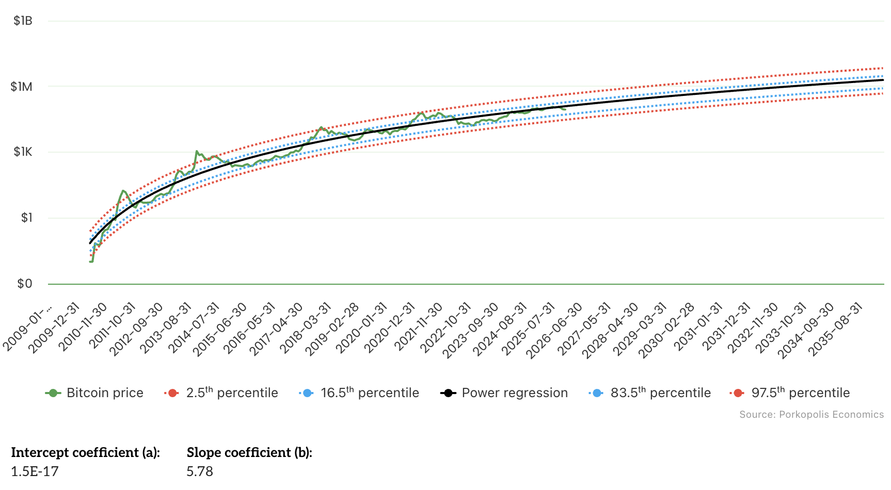

BitGo prices its $200+ million IPO tonight. Goldman Sachs led the book. Citi is co-lead. The bitcoin infrastructure company will trade on the NYSE Thursday at a roughly $2 billion valuation. 2026 is the year that bitcoin infrastructure goes mainstream via public markets.
Five years ago, that sentence would have been absurd. "Crypto IPO" meant unregulated exchanges, meme coin casinos, and companies that would later collapse in fraud. Today, it means the most prestigious banks on Wall Street competing for the mandate to take a bitcoin custody company public. They see the success of the bitcoin ETFs—IBIT is now the fastest growing ETF in history, and BlackRock's largest driver of fees—understand the real substance behind their growth, and want more. Contrasted with the smoke-and-mirrors crypto darlings of 2021, BitGo did $157 million in net income last year. They have real customers, real revenue, real margins, and public markets (both equity and credit) are hungry for bitcoin exposure.
The IPO Wave
On the equity market side, BitGo's reportedly "well oversubscribed" IPO is a continuation of a trend that began last year. Figure, the blockchain-based lending company, IPO'd in September led by Goldman, Jefferies, and Bank of America, posting $29 million in net income for the first half of 2025. In November, bitcoin exchange Kraken filed its S-1 confidentially and closed an $800 million pre-IPO round at a $20 billion valuation. The investor list reads like a who's who of sophisticated capital: Citadel Securities put in $200 million. Jane Street joined. So did Apollo Global.
Read that list of investors again. Citadel. Jane Street. Apollo. Goldman. Citi. Bank of America. The most sophisticated trading firms, alternative asset managers, and institutional allocators in the world are investing in bitcoin infrastructure companies. They don't make nine-figure bets on "crypto curiosity." They make bets on businesses they understand.
TradFi sees BitGo as the BNY Mellon for bitcoin, providing qualified custody and institutional settlement for this new market. They see Figure as Rocket Mortgage on blockchain rails, with over $16 billion in HELOC originations. They see Kraken as NASDAQ for the $2T+ of digital assets headlined by bitcoin. And there are many more companies coming, with Grayscale filing an S-1 in November and Blockchain preparing for a 2026 debut.
Credit Markets Are Just as Excited
But, importantly, credit markets are just as excited about bitcoin exposure as equity markets. MicroStrategy's STRC and Strive's SATA perpetual preferred stocks both traded to $100 par value this month. The implications of that are profound.
These perpetual preferred equities are fixed-income-like instruments backed by bitcoin balance sheets. When preferred stocks trade at par, the companies can issue more shares via at-the-market programs to buy more bitcoin, creating a flywheel between traditional capital markets and bitcoin accumulation. TradFi fixed income investors are choosing to accept a known fiat coupon—8 to 12 percent yields—in exchange for bitcoin-backed exposure.
Strategy raised over $7 billion through preferred offerings in 2025 alone, funding purchases of around 70,000 bitcoin (roughly 10% of their total holdings, the rest of which were funded by similar public markets activities). STRC weekly volume then jumped 53.7% in mid-January. Strive received over $100 million in unsolicited demand after its SATA IPO.
"STRC is Strategy's iPhone moment—a clean, scalable instrument designed to appeal to yield-seeking retail and institutional investors seeking indirect bitcoin exposure without the volatility."
— Michael Saylor
The market is proving him right, as fixed-income capital is flowing into bitcoin infrastructure. Just this week, Strategy announced that their total perpetual preferred equity is now larger than their total convertible debt issued ($8.2 billion). The appetite is broader and deeper than the IPO wave alone suggests.
Why Now?
Regulatory clarity helps but isn't the driver. The GENIUS Act passed last July, establishing the first federal framework for stablecoins. The SEC dropped enforcement actions against Kraken and other crypto companies in March. In October, Strategy received a credit rating from S&P Global. Actions like these removed friction for public markets investors, but they didn't create the demand.
The demand comes from substance. These companies built real businesses while everyone else chased narratives. Recurring revenue, credit discipline, regulatory compliance, institutional customers. The 2020-2022 public market options were bitcoin miners: capital-intensive, commodity-exposed, boom-bust cycles. The 2025-2026 options are financial services providers with a different risk profile, different investor base, different multiples. Meanwhile, traditional fixed-income products are struggling to deliver real returns. Bitcoin-backed instruments offering 8 to 12 percent yields are suddenly competitive.
The Power Law

For skeptics who remain unconvinced about the underlying asset, the data is worth examining. Since 2016, bitcoin's price has tracked a power law regression with R-squared above 95%. This is an empirical observation, not speculation.
A power law is the mathematical signature of network-effects-driven adoption. For every 13 percent increase in bitcoin's age measured in days since the genesis block, the trend price has doubled. The internet followed a power law growth curve, crossing the chasm into early majority adoption in the mid-1990s, and companies building infrastructure for it (Google, Amazon, Oracle) grew to become the biggest in the world.
Bitcoin is the internet of money, is following a similar growth trend (especially as a core component of "the debasement trade" according to JPMorgan), and has crossed the chasm into early majority adoption. The value creation opportunity now is building the plumbing—custody, settlement, lending, compliance—that helps both retail users and legacy institutions interact with the network. The power law doesn't guarantee anything about tomorrow's price. But it explains why sophisticated capital is paying attention to companies serving a network on this trajectory.
The Opportunity
Infrastructure companies like BitGo, Kraken, and Figure have spent the last decade building the plumbing to allow both retail users and institutional investors to access the bitcoin network. They have an enormous head start. And as the Bitcoin network has grown according to the power law, their balance sheets and income statements have grown into public market readiness.
TradFi investors betting on bitcoin infrastructure companies understand that if the Bitcoin network continues to grow at anything close to historical rates, these companies will ride that adoption wave into higher growth compounding faster than their legacy competition.
The infrastructure layer of the next financial system is going public. The question is whether you're paying attention.
But I've also watched this category mature from the inside. From 2018-2020, I was on the investment team at Multicoin Capital, one of the first institutional funds backing crypto infrastructure. From 2020 to 2025, I led business development at Lightning Labs, working directly with hundreds of bitcoin startups. Now I interface daily with TradFi public market investors evaluating this space.
The pattern I see is that the best companies spent years building real businesses quietly. Now they're ready for public markets, right when public markets are finally ready for them.
Get in Touch
Founders: If you're running a bitcoin infrastructure company and interested in public markets, I'm happy to compare notes.
Investors: If you're trying to get smart on this space quickly, same offer applies.
Reach me at info@bixispac.com or connect on LinkedIn.